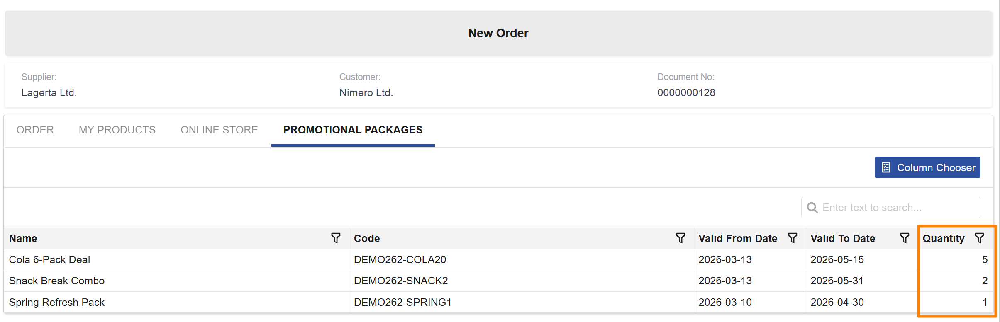
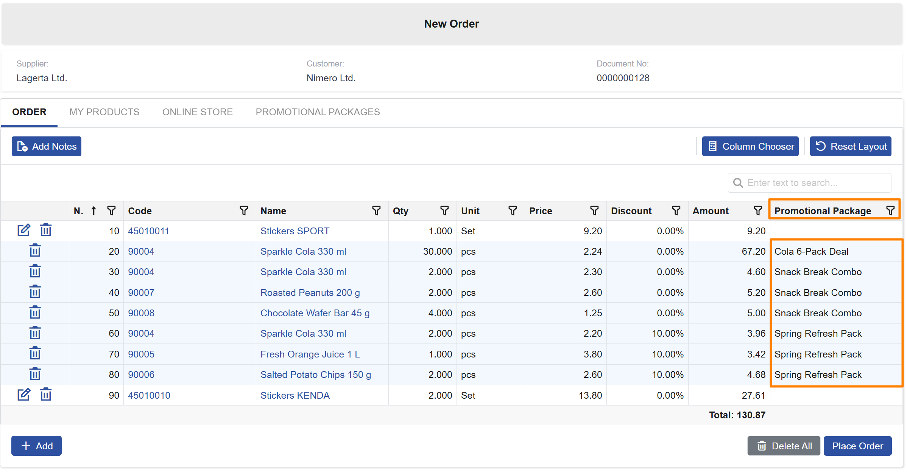
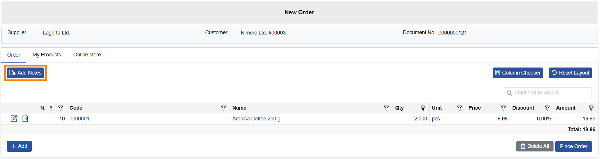
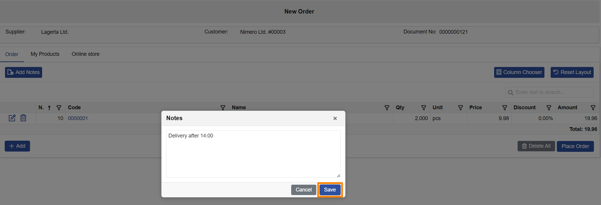
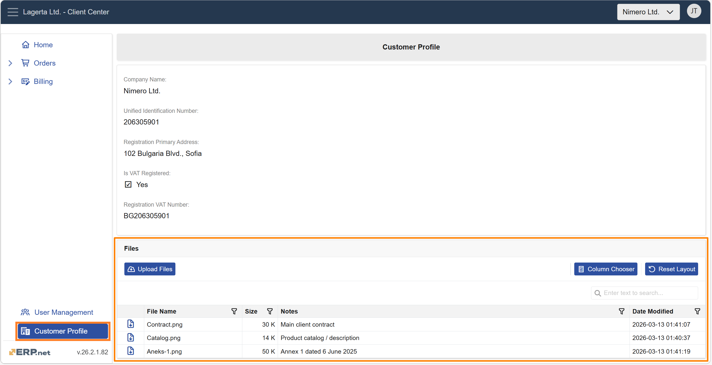

Client Center
This page summarizes the Client Center improvements delivered in v.26.2. It is updated as related cases are completed.
Notable features
1. Promotional Packages Available in New Order
Promotional offers are more useful when customers can see and order them directly during self-service, without relying on a sales representative. In v.26.2, Client Center now supports Promotional Packages in New Order, bringing the experience closer to desktop sales and making promotional offers visible at the moment of ordering.
Key capabilities:
- Customers can view the promotional packages available to them while creating a New Order.
- Customers can add a package directly to the order by entering a quantity in the Promotional packages panel.
- The system automatically adds the corresponding package lines to the Order tab.
- Promotional package lines are visually distinguished and remain non-editable after they are added.


Other features
1. Notes Entry During Order Creation
Small clarifications (delivery instructions, preferences, internal handling details) can make a big difference during fulfillment. In v.26.2, Client Center makes it easier to capture these details and keep them visible throughout the order flow.
Key capabilities:
- Customers can add notes while creating a New Order via Add Notes/Notes.
- Notes are displayed in the order document header when reviewing the order later.
- Notes can also be shown in the Orders list as an optional column via the Column Chooser.
- Notes remain optional and do not block order creation when left empty.


2. Customer-Related Documents in Customer Profile
Customer documents now have their own dedicated space in Client Center. With the new Files panel in Customer Profile, external users can easily access and share files—without unnecessary back-and-forth over email.
Key capabilities:
- View and download files attached to the customer and shared with external users.
- Upload new files directly from Client Center. Uploaded files are saved to the customer record and shared with internal and external users..
- Available for roles L40 (Billing) and above.
If there are no accessible documents, the panel displays the message "No documents available."

3. Direct Invoice Access from Due Payments
When reviewing unpaid obligations, customers often need to inspect the related invoice before taking action. In v.26.2, Client Center makes this easier by allowing direct access to invoice details from Due Payments, removing the need to manually search for the invoice in Invoices.
Key capabilities:
- Customers can open an invoice directly from the Invoice No link in Due Payments.
- Clicking the invoice number opens the same invoice document view available in Invoices.
- If the invoice is not accessible because of Client Center restrictions, the system shows an informative message instead of a system error.